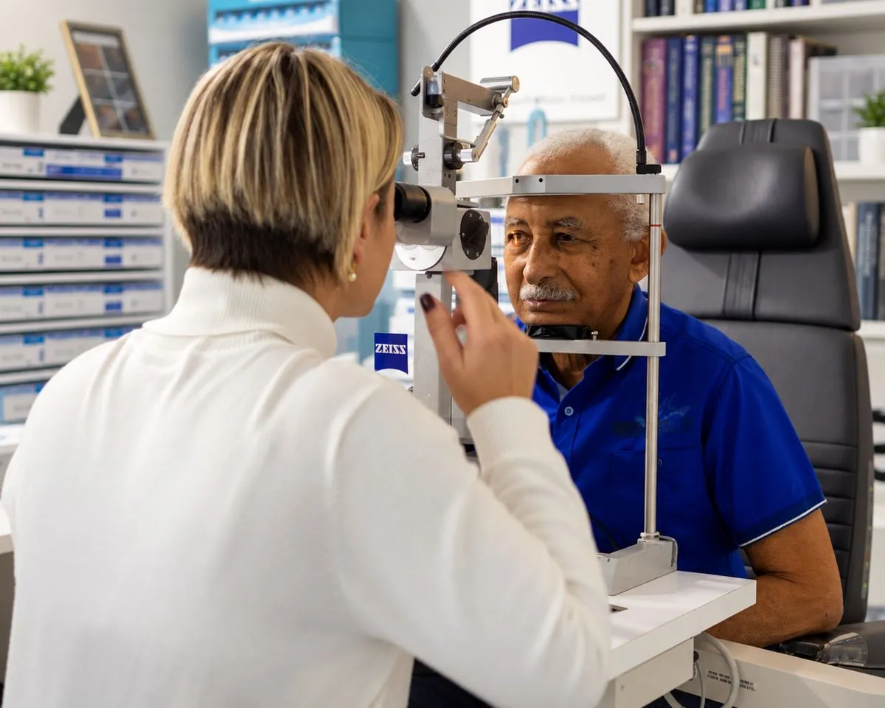
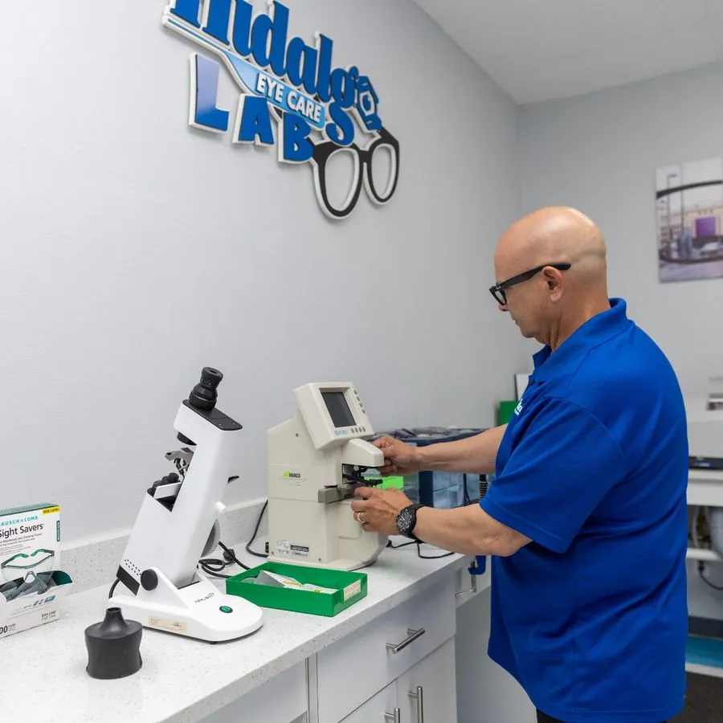

Optometrista en Tampa, FL
Cuidado completo de la vista para toda su familia
Exámenes completos de la vista, lentes de contacto y una óptica con laboratorio propio, bajo el cuidado de la Dra. Janet Hidalgo, O.D.

Lun–Vie, 9 AM – 5 PM
- Imagen de la retina
- Laboratorio propio
- Aceptamos la mayoría de los planes de visión
- Doctora bilingüe
Nuestros servicios
Cómo cuidamos de su vista
Exámenes de la vista
Exámenes completos, lentes de contacto, Orto-K, imagen Optomap y tratamiento Eterna para el ojo seco.
Espejuelos
Monturas de marca y económicas, con lentes hechos en nuestro laboratorio.
Seguros
Aceptamos la mayoría de los planes de visión, además de Medicare y Medicaid, y verificamos su cobertura antes de su visita.

Por qué Hidalgo Eye Care
Atención de práctica privada, no de mostrador
Las cadenas ópticas trabajan por volumen. Nosotros trabajamos para usted, con una doctora que conoce su historial y un laboratorio aquí mismo.
- Una doctora que le conoce, visita tras visita
- Espejuelos hechos en nuestro laboratorio, muchas veces antes de lo previsto
- Imagen amplia de la retina con Optomap
- Tratamiento Eterna para el ojo seco, en nuestra oficina
- Seguro verificado antes de su visita
Reseñas de pacientes
Lo que dicen nuestros pacientes
4.8
★★★★★728 reseñas en Google
Staff was very pleasant. Doctor was very knowledgeable and took her time. … I feel my exam was much more thorough than just the in and out eye places. Our exams were sent to our family doctor which very rarely happens at any other Eye Centers. I would definitely recommend. Five Stars!I went yesterday because my husband told me about Hidalgo. Everyone there is very polite and explains each process. Making sure you feel informed and comfortable during each step. Doctor Hidalgo checks every detail and explains it. … Totally recommend them.La mejor doctora optometrista: Janet Hidalgo. Desde el primer momento fue increíblemente atenta, profesional y paciente. Me explicó todo con claridad, respondió cada una de mis preguntas y se aseguró de que mi graduación quedara perfecta.From the time I walked in until the end of the visit I was treated with great respect. They provided me with the help I needed and the glasses are of high quality and very affordable for the average person. No complaints here!Appointment was honored, didn't have to wait long. Glasses were ready in 5 days. The staff is very professional. Would definitely visit again.Dr. Hidalgo, the best Eye Doctor in Tampa, offers exceptional service, attentiveness, knowledge, and professionalism. She takes her time to explain everything thoroughly, ensuring you understand everything.Si pudiera darle 10 estrellas se las daría. Desde que entras a la clínica te sientes como en casa, una atención increíble y sales más que complacida. … 100% recomendado.Dr Hidalgo and staff were very knowledgeable, thorough and kind. It was a very pleasant experience. Dr was very detailed in explaining what I needed to do to keep my eyes and whole body healthy. I highly recommend Dr Hidalgo.Great service. Scheduled my appointment and got in within a week. Day of appointment, minimal paperwork and Dr saw me ASAP. Got my prescription and everything was good.Desde el momento en q fui atendido en la recepción sentí el respeto, la ayuda y amabilidad de todo el equipo allí presente. … Seguro estoy q la persona q acuda con la necesidad de solucionar su dolencia estará 100% en buenas manos.Excellent and professional staff. This is the best optical service I have received so far. The Doctor is very knowledgeable and caring. I highly recommend this clinic.The treatment I received was nothing short of amazing, everyone was so polite and friendly and knew what they were doing! Have never had such a wonderful experience from eye care professionals!!!Excelente experiencia, muy profesionales todos los trabajadores, amables, con mucha paciencia y cariño!! Recomendado 100% ademas sales de ahí con tus lentes ordenados!! Excelente la Dr Hidalgo!! Y todo su equipo!! Gracias!!The best doctor that worked with my 4 kids at once.Hidalgo eye care is the best place I've gone to for my eye care. The whole staff is professional, kind and approachable. Love it!!The staff is very pleasant and explains the examination process as they go. Dr. Hidalgo explains the examine and what is best needed. It's a very caring office.Friendly place. I mixed up my appointment date and came in too early and they still took me in right then. I would recommend this place.Me parece un equipo muy profesional, la doctora y asistentes muy amables y les distingue su trato y conocimiento de su profesión, la verdad me sentí muy cómoda y cuidada con ellas.I am extremely satisfied with my visit today. The entire office was clean and welcoming, and the team displayed professionalism and politeness. Dr. Hidalgo was very informative about my eye health.Todo el personal, desde la recepción hasta la doctora, personas súper agradables, haciendo q uno como cliente se sienta super bien … buena atención, graciasss